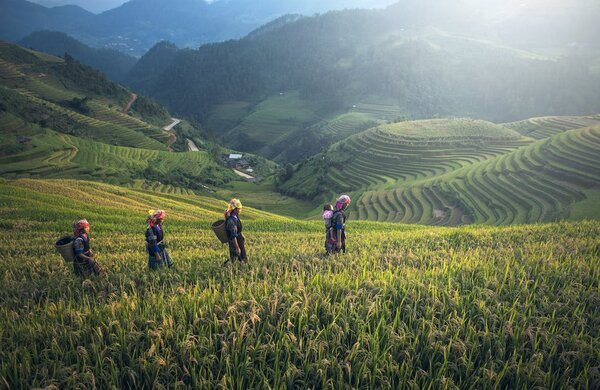
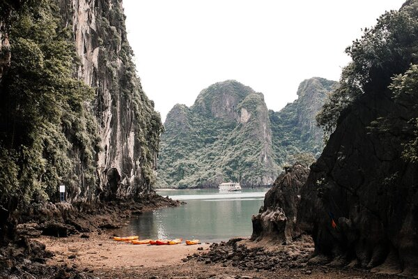
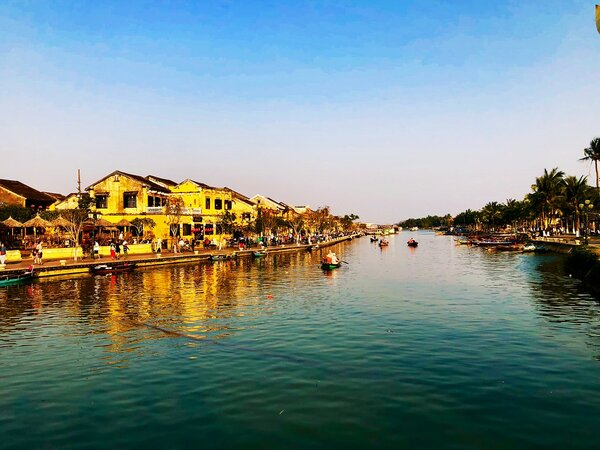

Vietnam travel
Must-visit Destinations
Join us as we explore some of the most famous destinations in Vietnam, highly recommended by travelers from around the world.
Ha Giang
Ha Giang, a mountainous province in northern Vietnam, has stunning terraced rice fields, towering mountain ranges, and lush valleys. It is home to a variety of ethnic groups, giving visitors a chance to experience unique lifestyles, local customs, and vibrant festivals, including Buckwheat Flower Festival, Water Festival or Hmong New Year. Additionally, when exploring Ha Giang, travelers can try delicious dishes that reflect the flavors of the local mountain communities. Some of the must-try food in Ha Giang are Thang co (horse meat soup) and five-colored glutinous rice.
Ha Long Bay
Ha Long Bay, a UNESCO World Heritage site in northeastern Vietnam, attracts tourists for its limestone mountains that rise up from emerald waters. Moreover, Ha Long Bay also offers a plenty of activities like kayaking, exploring hidden caves or cycling around the rustic village. It's also the perfect destination to relax on a cruise while watching stunning sunrises and sunsets. Some local specialties that you can enjoy while visiting Ha Long are Cha muc (squid cake) and fish noodle soup.
Hoi An
Hoi An is another destination that worth visiting when you are in Vietnam. It is an ancient town in central Vietnam with well-preserved architecture and tranquil scenery. The town offers a variety of activities, including cycling through the surrounding countryside, taking a cooking class to learn about Vietnamese cuisine, or enjoying a boat ride on the Thu Bon River. Hoi An is also famous for its delicious food, with must-try dishes like cao lau (thick rice noodles with pork) and banhmi.